코드를 미리 읽어 두는 Graft
Claude Code를 유독 잘 쓰는 사람들은 기본 상태 그대로 쓰지 않아요. 필요한 도구를 붙여서 써요. 영상은 그 모습을 한 장으로 보여 줘요. 가운데 Claude Code 창이 있고, 왼쪽에 Graft와 Agency Agents, 오른쪽에 Codebase Memory MCP와 OpenMontage가 플러그처럼 꽂혀 있어요.
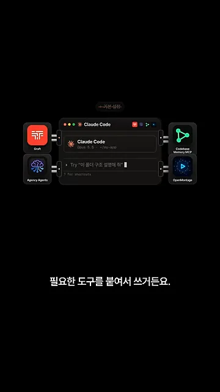
영상이 소개하는 네 도구를 한눈에 정리하면 이래요.
| 도구 | 하는 일 | 얻는 것 |
|---|---|---|
| Graft (지금은 Trail-code) | 함수가 어디서 불리는지 코드를 미리 분석해 둬요 | 질문마다 관련 파일 위치가 붙고, 수정 시 영향받는 곳을 알려 줘요 |
| Agency Agents | 분야별 전문 에이전트 수백 개를 모아 뒀어요 | 일하는 순서와 결과물 기준이 정해진 전문가를 불러 써요 |
| Codebase Memory MCP | 코드 전체를 호출 관계 그래프로 저장해요 | 파일 읽는 토큰이 줄고, 영향 범위와 안 쓰는 함수를 찾아 줘요 |
| OpenMontage | 조사부터 편집까지 영상을 만들어요 | 단계마다 승인을 받고, 돈 드는 기능은 예상 비용부터 보여 줘요 |
첫 번째, Graft
첫 번째 도구는 Graft예요. 영상에서도 지금은 Trail-code로 이름이 바뀌었다고 짚어요. 내 컴퓨터의 코드를 미리 훑어서, 어떤 함수가 어디서 불리는지 정리해 둬요. 그러면 Claude가 답을 찾으려고 파일을 하나씩 열어 볼 일이 줄어요.
아래 화면을 보면 "결제 실패 원인 찾아 줘"라는 질문 아래에 src/pay/charge.ts:14 charge()와 src/pay/retry.ts:8 retryPayment()가 바로 붙어 있어요. 아래 칸에서는 Claude가 실제로 읽은 파일이 이 두 개뿐이고, 읽은 파일 수가 10개에서 2개로 줄었다고 표시돼요.

코드를 고칠 때도 도와줘요. 다음 화면은 charge.ts의 charge(amount)를 charge(amount, currency)로 바꾼 상황이에요. 이 함수를 부르는 checkout.ts, refund.ts, invoice.ts에 경고 표시가 붙고, 아래에 'blast radius 3 files'라고 나와요. 이렇게 한 군데 수정이 퍼지는 범위를 영향 범위라고 불러요.
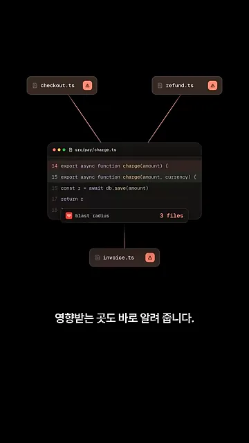
분야별 전문가를 불러 쓰는 Agency Agents
두 번째는 Agency Agents예요. 개발, 디자인, 마케팅까지 분야별 전문 에이전트가 수백 개 들어 있어요. 화면은 세 칸으로 나뉘어요. 개발 칸에 Frontend Developer, Backend Architect, AI(Artificial Intelligence) Engineer가, 디자인 칸에 UI(User Interface) Designer, UX(User Experience) Researcher가, 마케팅 칸에 Growth Hacker, SEO(Search Engine Optimization) Specialist, TikTok Strategist 같은 이름이 보여요. 아래 줄에는 Game Development, Security, Finance 같은 다른 분야 태그도 이어져요.
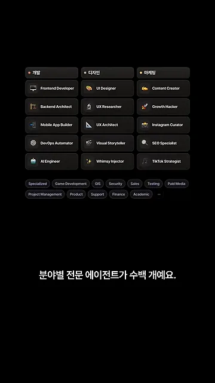
명령어로 설치하는 게 어렵다면 공식 데스크톱 앱에서 클릭으로 깔 수도 있어요. 깔고 나면 쓰는 법은 두 가지예요. 위 창처럼 'UI Designer 에이전트로 랜딩 페이지 시안 잡아 줘'라고 이름을 불러 맡기거나, 아래 창처럼 '가입 전환율이 왜 떨어졌는지 조사해 줘'라고 일만 말하고 Claude가 알맞은 서브에이전트를 고르게 하면 돼요.
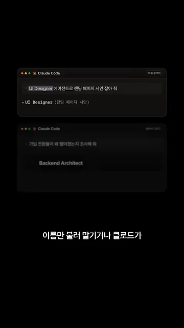
코드 전체를 그래프로 저장하는 Codebase Memory MCP
세 번째는 Codebase Memory MCP예요. 누가 누구를 부르는지 코드 전체를 그래프로 저장해요. 화면에서는 main(), router(), charge(), db.save() 같은 함수가 점으로, 호출 관계가 선으로 이어진 그래프가 SQLite 데이터베이스 하나에 담겨요. 저장 위치는 ~/.cache/codebase-memory-mcp/로 나와요.
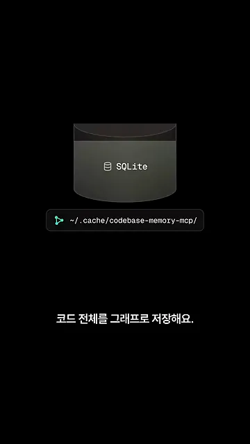
깔고 나서 할 일은 'Index this project'라고 한마디 하는 것뿐이에요. 이 말로 인덱싱이 시작돼요. 그다음부터는 Claude가 그래프에서 바로 찾아요. 화면 왼쪽 '파일 하나씩' 칸은 Read가 아홉 줄 이어지고 토큰 막대가 거의 차 있어요. 오른쪽 '그래프 조회' 칸은 search_graph 한 번으로 charge.ts:14를 찾고, 토큰 막대는 바닥에 조금만 차 있어요.

함수를 고치면 영향이 어디까지 가는지도 따라가 줘요. 다음 화면 위쪽 trace_path 창은 charge()를 고쳤을 때 payWithCard() → checkout() → App.onPay() 순서로 세 단계 위까지 영향이 이어진다고 보여 줘요. 아래쪽 'Dead code candidates' 창에는 부르는 곳이 0개인 legacyCharge()와 formatOldPrice()가 '후보'로 올라 있어요. 안 쓰는 함수 후보, 즉 데드 코드를 찾아 주는 기능이에요.
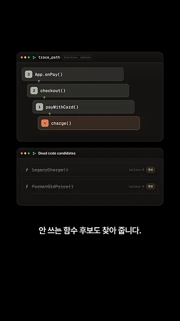
영상까지 만드는 OpenMontage와 깔기 전 주의점
마지막 도구는 OpenMontage예요. Claude Code가 조사부터 대본, 내레이션, 자막, 편집까지 영상을 만들어요. 화면 위쪽에 이 다섯 단계가 아이콘으로 이어져 있고, 아래에는 완성된 세로 영상 '커피 한 잔의 과학'이 재생돼요.
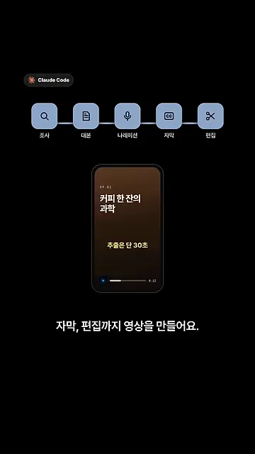
마음에 드는 릴스를 주면 구성을 분석해서, 그대로 베끼지 않은 기획안부터 보여 줘요. 그리고 중요한 결정은 사람이 쥐고 있어요. 아래 화면에서 '대본' 칸과 '장면' 칸에 각각 '승인' 버튼이 있고, 둘 다 눌러야 아래 막대가 열리며 다음 단계로 넘어가요.
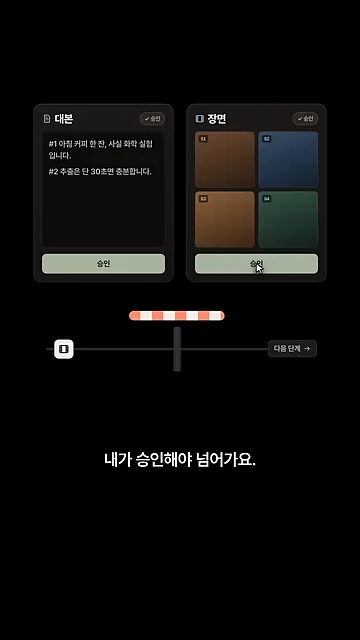
돈이 드는 기능은 쓰기 전에 예상 비용부터 보여 줘요. 화면에는 영수증처럼 항목별 예상 비용이 찍히고, 합계 '$0.18' 아래에 '승인하고 실행' 버튼이 있어요.
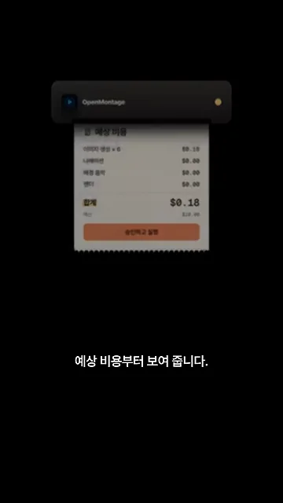
깔기 전에 확인할 두 가지
첫째, Agency Agents를 명령어로 깔면 같은 이름의 파일을 경고 없이 덮어써요. 아래 두 화면이 그 과정이에요. 앞 화면에서 ./scripts/install.sh --tool claude-code를 돌리자, '우리 브랜드 색은 오렌지 #D97757로 고정', '버튼 모서리는 12px'라고 적어 둔 내 design-ui-designer.md 위로 'You are UI Designer…'로 시작하는 같은 이름의 새 파일이 내려와요. 뒤 화면에서는 새 파일만 남고 빨간 X 표시가 붙어요.
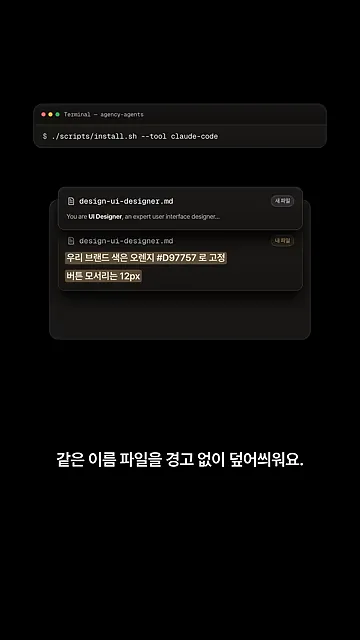
잠시 뒤에는 겹쳐 있던 내 파일이 사라지고, 폴더에는 새 파일 하나만 남아요. 오른쪽 위 빨간 X가 내 규칙이 지워졌다는 표시예요.
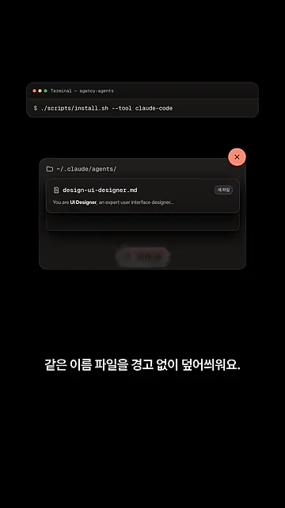
둘째, Graft도 처음엔 사용량이 나가요. 화면에서 trail init을 실행하자 '지난 대화' 창에 'pnpm으로 테스트 돌려 줘', '커밋 메시지는 한국어로' 같은 예전 대화가 지나가고, 오른쪽 '사용량' 막대가 쑥 올라가요. 지난 대화 기록을 읽느라 Claude 사용량이 쓰이는 거예요.
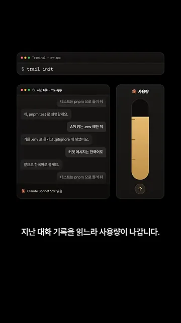